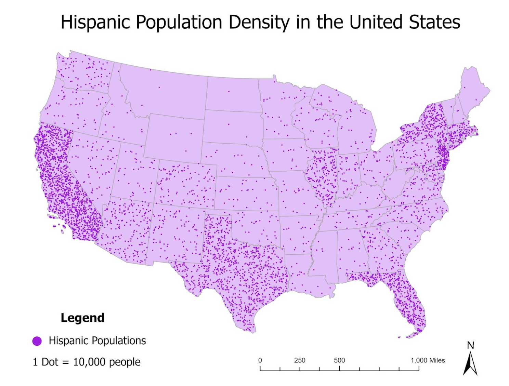

Hispanic Population Density in Contiguous US
Narrative: How I solved the problem
I created a proportional symbol maps using census data at the national scale. A dot density represents this data well because it is visually readable, and the progression of colors/concentration of dots allows viewers to identify which states have the greatest density/percentage of Hispanic populations in the contiguous U.S. To create the dot density map, I right clicked on the shapefile and clicked symbology. I chose: “primary symbology”, I chose dot density. I selected the correct field, then experimented with the dot size and value, until I found a dot size and dot value that clearly showed each state's Hispanic population density, without overwhelming the map. Each dot represents 10,000 people.
Tools
I focused on symbology tools for this map. I used the “convert to graphics” and “ungroup” tools to edit the legend to be more readable. I used symbology to edit the colors, dot size, and to choose dot density to represent the data.